reusia.boston on 13
October 2000, with approximately acs-4-0-beta-2-R20001009.
Here are the graphs for the 15 stages, and the log message of their beginning is written in the lower right of the graphs. In comparison with the first measurement, the steeper slopes indicate much less variation in the measurements, which reflects the more reproducible conditions (essentially no other activity) on reusia.boston in comparison with dev0103-001.
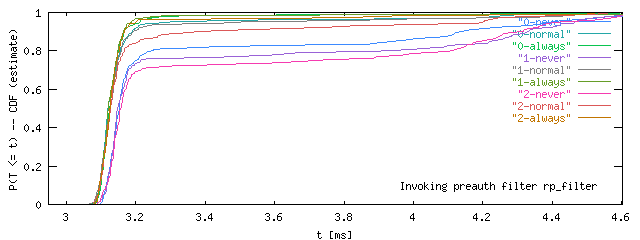
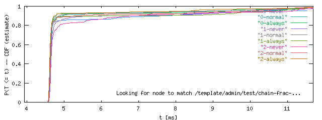
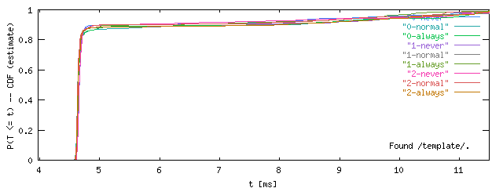
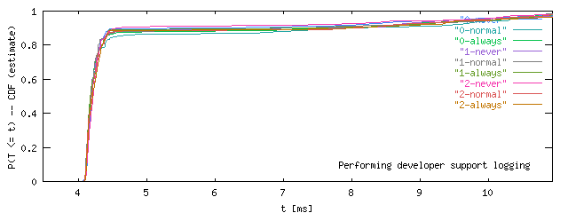
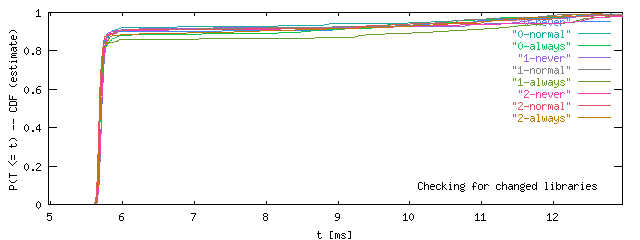
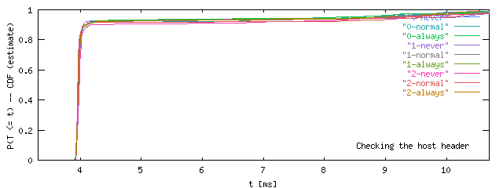
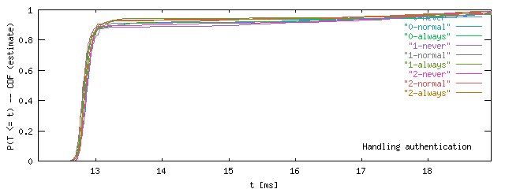
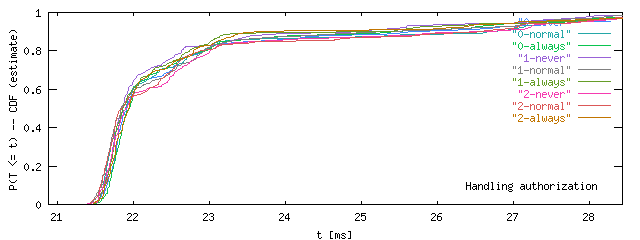
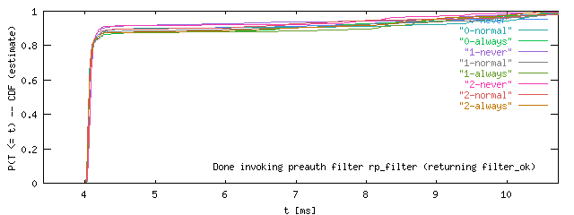
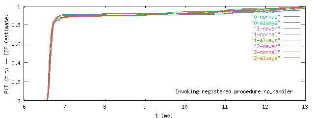
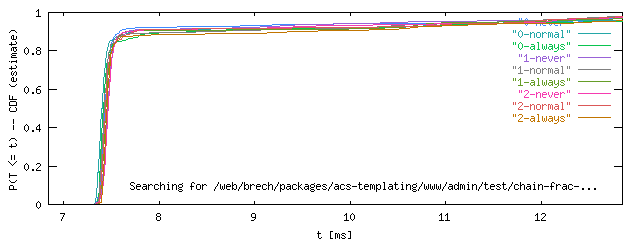
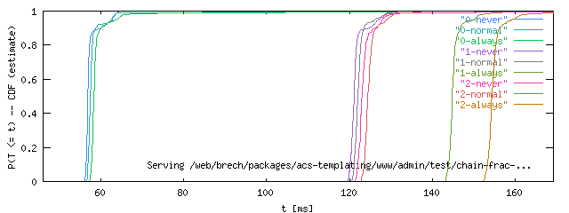
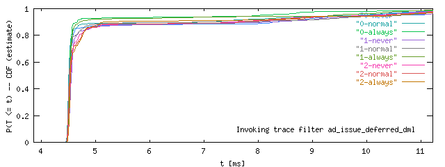
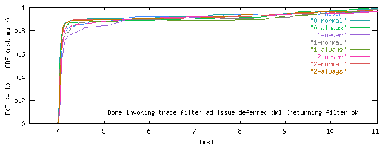
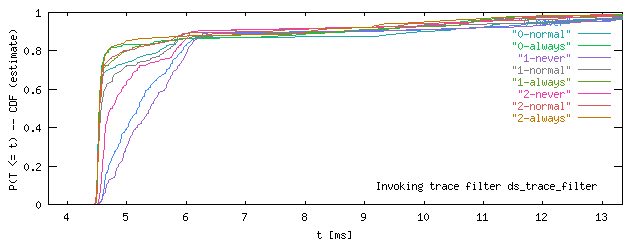
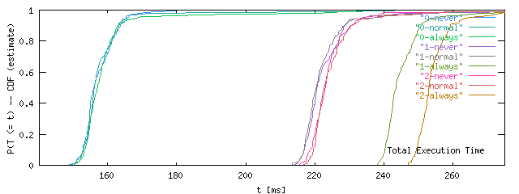
Overall, the templated pages are delivered markedly slower, by about 65ms. Forcing the template system to always reread all files and to recompile the ADP part slows them down, as expected, but overall they are still faster than the Tcl-only page.